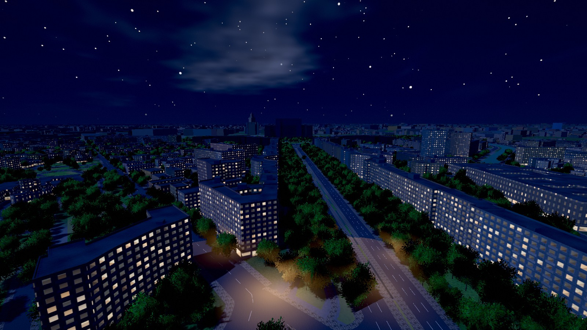
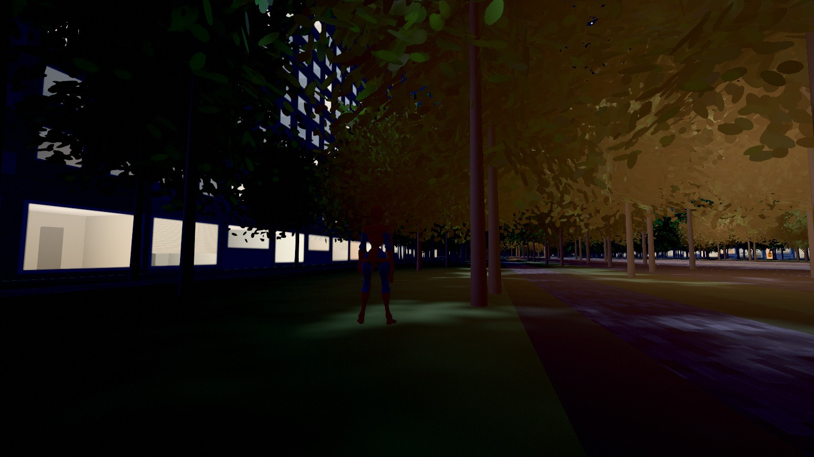
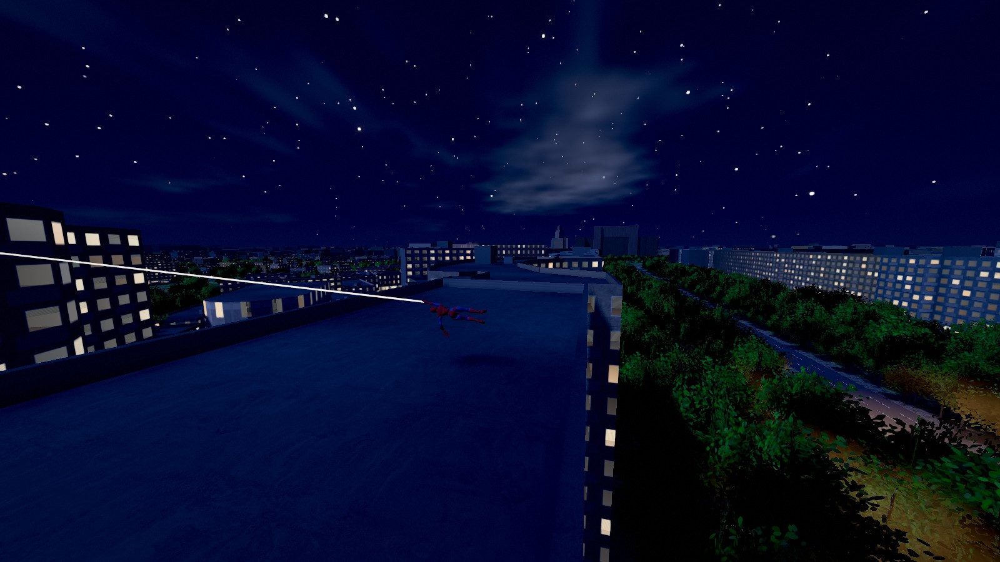

Le stesse quattro inquadrature dal gioco vero, con lo stesso codice, cambiando solo lo stile (tasto B, o ?style=a|b|c). Tocca un’immagine per ingrandirla. Sotto, la notte nello stile predefinito.
17:30, ora d’oro. Il viale verso il Parlamento e il sole basso a sinistra.
17:30. Verso il Parlamento, con il sole in faccia.
17:30. I palazzoni a pannelli con la luce radente sulla facciata ovest.
17:30. Tre teppisti, due passanti e un poliziotto sull’asfalto vicino all’Ateneo.
Finestre e lampioni accesi, luna, stelle, pozze di luce calda sotto i lampioni.


